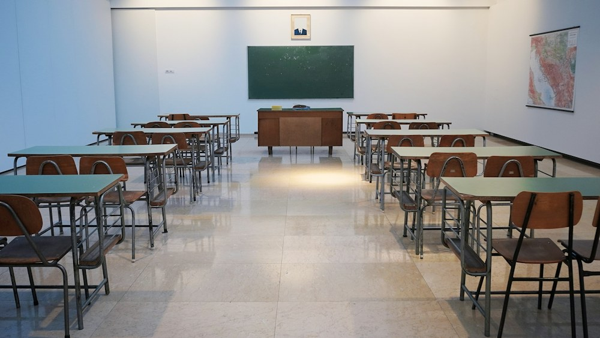
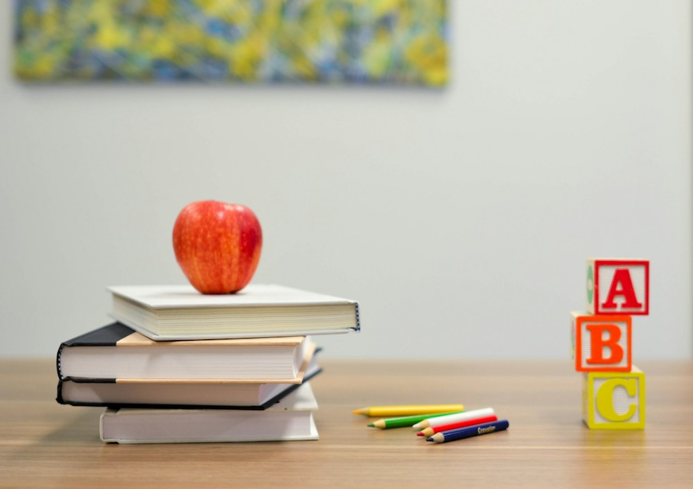

Juntos pela educaçãoAprender hoje.
Aprender hoje.
Transformar o amanhã.
Um ponto de encontro entre a Secretaria de Educação, nossas escolas e as famílias. Informação acessível para uma comunidade mais próxima.
Educação se constrói com participação.

Imagem ilustrativaCada descoberta abre
um novo caminho.
um novo caminho.
A educação em movimento
Todas as notíciasAcontece na nossa rede.
Perto de vocêCada escola,
Cada escola,
uma comunidade.
Uma rede de possibilidades.
Conheça os espaços, os projetos e as pessoas que fazem a educação acontecer em cada unidade.
Explore as escolasAnote na agenda
Ver calendárioPróximos encontros.
Datas ilustrativas para demonstrar o calendário.
Transparência e informação
Acessar documentos O que você precisa, em um só lugar.
Comunicados, orientações e documentos organizados para facilitar o acesso.